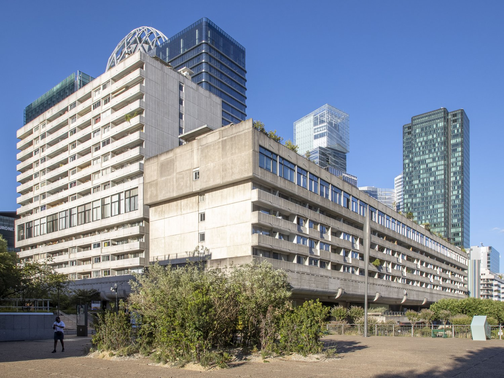

Vision 80 est un ensemble de 442 logements livré en 1973, sur la dalle de La Défense, à Courbevoie. Cette page explique comment la résidence est organisée, à quoi la reconnaître, et comment s'y rendre.

La résidence se compose de deux corps de bâtiments disposés en L, qui ferment la place des Reflets sur deux côtés. Ils portent des adresses sur deux voies différentes, et forment deux copropriétés distinctes.
Environ 47 m de haut, implantée perpendiculairement à l'esplanade. Désignée CH12. Elle compte 206 appartements.
Entrées : 3 et 5 Terrasse des Reflets
Environ 124 m de long, alignée le long de l'esplanade de La Défense. Désignée CH13. Elle compte 236 appartements.
Entrées : 1, 2 et 4 Place des Reflets, et 48 Esplanade du Général de Gaulle côté esplanade
Quelques logements sont des duplex largement vitrés. L'ensemble repose sur de larges pilotis qui dégagent le rez-de-dalle : on circule à pied sous les bâtiments. Les façades sont en béton brut, avec les empreintes des planches de coffrage encore visibles dans les parties basses.
Vision 80 a été conçue par les architectes André Frischlander, Jean-Pierre Jouve et Charles Mamfredos, pour le compte de SOPEGI Promotion, et livrée en 1973.
Elle relève du mouvement moderne et reprend plusieurs partis pris de Le Corbusier : les bâtiments sur pilotis qui libèrent le sol pour les piétons, les façades en béton brut soigné, les rues intérieures et les jardins en toiture.
La résidence apparaît dans le film Au poste ! de Quentin Dupieux, où habite un des personnages principaux.
Sources et documentation : Wikipédia, PSS-Archi. Les adresses et le rattachement de chaque entrée à son bâtiment viennent de la Base Adresse Nationale et du registre national d'immatriculation des copropriétés.
Pour le détail de l'accès au 5 Terrasse des reflets, entrée desservie par le monte-charge : 5reflets.github.io.